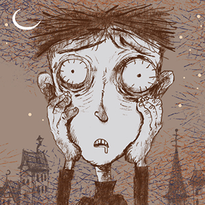

O Menino que se Alimentava de Pesadelos
| EDITORA | Intrínseca |
|---|---|
| AUTORIA | Jo Yong (Autor), Jam San (Ilustrador), Jae hyung Woo (Tradutor) |
| NÚNERO DE PÁGINAS | 24 |
| IDADE DE LEITURA | 10+ |
Agora sim. Essa é uma autópsia especial — porque o corpo a ser analisado não é só literário, é simbólico. O Menino que se Alimenta de Pesadelos, da fictícia (mas muito mais real que muita autora por aí) Ko Moon-young, é um desses livros curtos que carregam um coração inteiro batendo dentro.
Esse livro é um corpo miúdo, de palavras curtas e páginas magras, mas que carrega dentro de si um órgão vital que a maioria dos romances longos esquece de cultivar: consciência. Não sobre o mundo ao redor — mas sobre o mundo interno, aquele escuro, escondido, cheio de dores que a gente tenta calar com força.
O menino da história não quer ser feliz. Ele quer esquecer.
Quer apagar as memórias ruins, os traumas que o machucaram, as cicatrizes que ele ainda nem entende. E por um tempo, consegue. Só que, ao fazer isso, também apaga as partes que o fariam crescer. Apaga as sementes da coragem. As raízes da empatia. Os espinhos que, com o tempo, virariam defesa.
Esse livro não romantiza a dor — mas também não finge que ela pode ser jogada fora. Ele diz o que ninguém tem coragem de dizer em voz alta: a dor é parte do que te torna humano.
É feia, incômoda, insistente. Mas necessária.
Ko Moon-young escreveu um conto que sangra, mas não grita.
Um conto que sussurra verdades doídas, como quem embala uma criança que está prestes a crescer. E crescer, aliás, é o verdadeiro terror. Não o monstro. Não o trauma. Mas o que vem depois: continuar mesmo assim
Esse livro tem o peso de um pesadelo e a leveza de quem sobreviveu a um..
Não traz alívio. Traz espelho.
E é por isso que é o mais forte entre os cinco: porque entende que a cura não vem do esquecimento. Ela vem da lembrança que a gente aprende a carregar — não como fardo, mas como prova de que existiu. E seguiu.
No fim, O Menino que se Alimenta de Pesadelos é um desses livros que não deveriam ser lidos — deveriam ser escutados.
Porque cada frase é como se fosse dita por dentro.
Porque toda dor esquecida... um dia volta com fome.